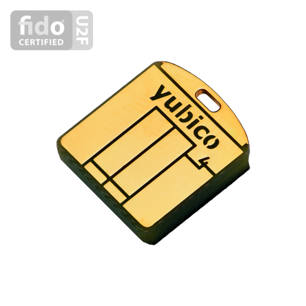

HSM

“Curs d'Introducció a la criptografia” by Jordi Íñigo Griera is licensed under a
Creative Commons Attribution 4.0 International License.
Project hosted at github.com/jig/crypto
RNG
o TRNG (True Random Number Generation)
parèntesi: RNG en ordinadors tradicionalrs (no HSM)
RNG: generació
Com implementem un RNG si no és algorísmic?
- Recopilant events d'entrada (I/O) i acumulant els seus paràmatres (habitualment les xifres menys significatives de l'hora en ns ò μs)
- Mitjançant dispositius especialitzats (HSM*)
*) HSM: Hardware Secure Module
RNG: acumulació d'aleatorietat
les diverses fonts que farem servir per a generar la seqüència del RNG —ja sigui d'I/O, o de dispositius hardware especialitzats— les podem acumular de diferents fonts individuals mitjançant $\oplus$
en el cas de que una de les fonts no sigui del tot uniforme, això no empitjora la qualitat final del RNG a condició de que al menys una de elles si que ho sigui
RNG: acumulació d'aleatorietat
s'ha de vigilar però que la acumulació garanteixi que:
- RNG tingui una distribució uniforme
- després de $n$ no s'ha de poder predir el $n+1$ amb una probabilitat diferent de $\frac{1}{2}$
RNG: entropia
el que podem fer és marcar cada font individual d'aleatorietat amb una entropia
- per a fonts perfectes tenim 1 bit d'entropia per a cada bit generat
- per a fonts menys perfectes podem necessitar diversos bits per a generar un bit d'aleatorietat
RNG: entropia
- és important "etiquetar" bé les nostres fonts (entropia)
- hem de reduir els bits rebuts a bits amb entropia 1
- els bps del RNG (abans i sobretot després de reduir) poden ser pocs (lentitut)
RNG: fonts
HUI ($\ll 1$ kbps després de reducció)
latencia disc dur ($\ll 1$ kbps després de reducció)
Xarxa ($\approx 1$ kbps després de reducció)
funcions de processador (Intel: $\gg$ Mbps)
RNG: distribució uniforme
Els RNG han de tenir unes propietats
aquestes propietats no aplican al nombre generat (o el bit) en sí, si no a les seqüències de nombres generats
la seqüència de nombres (o de bits) ha de tenir una distribució uniforme
RNG: distribució uniforme
per a $n$ bits generats, la probabilitat d'una seqüència donada és la mateixa de la de cap altra ($2^{-n}$)
cap algorisme pot predir el següent bit coneguts els anteriors
RNG: validació
per seqüències prou llargues el nombre d'$1$'s i $0$'s tendeix a ser el mateix
per seqüències prou llargues el nombre de grups ${00, 01, 10, 11}$ tendeix a ser el mateix
etc.
aquests tipus de tests permeten saber que la meva font no té problemes obvis, però no és suficient contra un atacant capaç de modificar convenient el sistema RNG
RNG: validació
per a què un RNG només es pot considerar segur si sabem com el generem, i el generem de forma segura
RNG: vulnerabilitats
la criptografia és segura sempre que les hipòtesis de funcionament es compleixin
l'aleatorietat real de la font RNG és una d'elles

(de xkcd.com/221)
RNG: dispositius ad-hoc de generació
basats en la mesura de paràmetres físics:
soroll tèrmic
indeterminació quàntica
RNG: soroll tèrmic
una resistència a temperatura ambient, té electrons lliures que es mouen aleatòriament (càrrega negativa) i podem mesurar-ne el desequilibri momentani amb un conversor Analògic/Digital
el conversor donarà una seqüència indefinida de bits aleatoris
RNG: soroll tèrmic
el soroll tèrmic és el resultat d'un fenòmen caòtic (no estrictament aleatori)
(...)
RNG: indeterminació quàntica
amb una font (tènue) apuntem a un mirall semireflectant; dos fotodetectors detecten un o l'altre el fotó de forma totalment aleatòria
generador random quàntic
(d'idquantique.com)
RNG?
les dues famílies de dispositius generen nombres aleatoris... però no uniformes
- RNG tèrmic: limitat pel BW (oscil·la)
- RNG quàntic: limitat per la precisió del mirall (semireflectància del 50,000...%)
Reducció/condicionament
el flux en cru es processa sempre, típicament:
- es descarten les seqüències de '1' i de '0' i només es genera un random en els canvis
- s'aplica una PRF/PRP sobre el flux anterior (e.g. les CPU's Intel xifren la seqüència amb AES-128 i la clau 0..0)
això redueix els bps però "uniformitza" la seqüència
RNG a Linux
a Linux (Ubuntu) tenim dues fonts random:
/dev/random: sortida RNG basada en I/O ($\approx$ bps)/dev/urandom: unblocking random, sortida PRNG enriquida amb/dev/random; ($\approx$ Mbps)
a altres Linux tenim diferents combinacions de /dev/random i amb aleatorietat obtinguda de fonts diferents
RNG: vulnerabilitats
Wikipedia: Random number generator attack
Cloud: random... amb poca entropia per poca I/O
Debian: random... amb poca entropia per errors de codi
Intel: random... implementació tancada (...)
PlayStation 3: random... constant
HSM
(Hardware Secure Module)
HSM
(Hardware Secure Module)
les funcions d'un HSM són:
- generar claus de qualitat
- custodiar-les de forma segura
- protegir-les contra ús ilegítim
- assegurar-ne l'ús correcte
- secundàries:
- velocitat (TPS, acceleració TLS)
- volum (quantitat de claus)
- portabilitat (mobilitat física)
- clau compartida (n/m)
Exemples: portabilitat
(font
DGP)
Exemples: portabilitat
Exemples: servidors

Exemples: servei en xarxa

subsistemes
per a implentar les funcions anteriors cal:
- generador de claus aleatòries (RNG)
- ús controlat verificable
- protecció física (no es pot llegir el sistema de fitxers, o modificar el software sense fer malbé l'HSM)
- protecció software (API amb control d'accés)
- àrea d'atac mínima (API "minimalista", fa més improbable els bugs o els security flaws)
FIPS 140-2
els HSM poden ser certificats segons
FIPS 140-2
en diferents nivells:
aquest estàndar defineix els requeriments de seguretat que han de seguir els HSM (certificats):
The security requirements cover areas related to the secure design and implementation of a cryptographic module. These areas include cryptographic module specification; cryptographic module ports and interfaces; roles, services, and authentication; finite state model; physical security; operational environment; cryptographic key management; electromagnetic interference/electromagnetic compatibility (EMI/EMC); self-tests; design assurance; and mitigation of other attacks.
FIPS 140-2
- FIPS 140-2 nivell 1: sense mesures físiques (llibreries); anàlisi lògic i de algorismes
- FIPS 140-2 nivell 2: nivell 1, i ha de disposar de mesures passives per a detectar l'accés físic (segells, evidències)
- FIPS 140-2 nivell 3: nivell 2, i ha de disposar de mesures actives per a contrarestar l'accéss físic (zeroització) i només permet exporta les claus xifrades
- FIPS 140-2 nivell 4: nivell 3, i ha de disposar de validació formal del funcionament
FIPS 140-2
per a gestionar claus d'usuaris per a signatura avançada habitualment es requereix FIPS 140-2 nivell 2
per a autoritats de validació o de segell de temps, habitualment es requereix FIPS 140-2 nivell 2
per a autoritats de certificació habitualment es requereix FIPS 140-2 nivell 3
PKCS #11
PKCS #11
és una especificació de la API dels HSM en llenguatge C (literalment un .h)
PKCS: Public Key Cryptographic Standard. Estàndards de facto publicats per RSA Labs. Inc. (ara EMC2); actualment la gestió de l'estàndard ha passat a OASIS